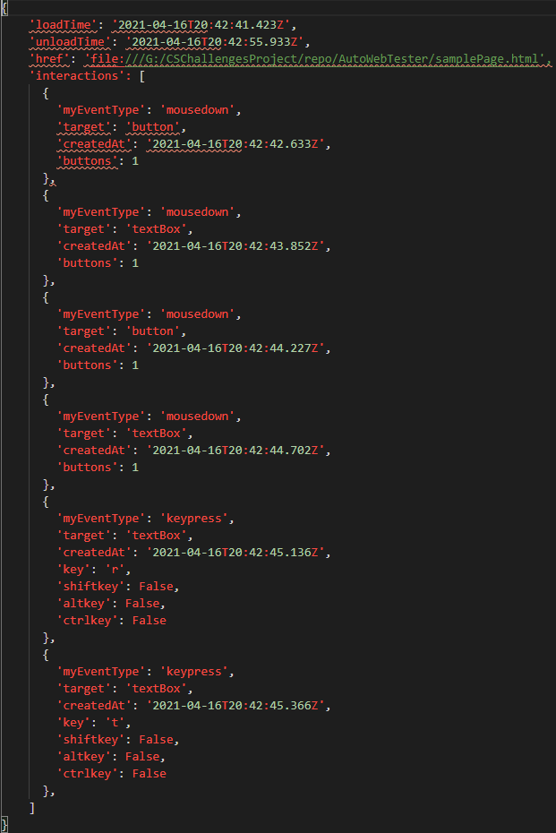

"Testing is a crucial part of web app development and can take around (and sometimes over) 30% of developer time. Modern commercial web applications often
include logging to track user behaviour on a web site to better optimise web application development. By adapting these logs so that they can be ‘replayed’
automated tests can be created by manually testing a web application once and then using the logs to automatically verify the test each time
(after some minor modification to check that some output states are correct)
The purpose of this project is to adapt a minimal user logging system such as
https://github.com/greenstick/interactor (Links to an external site.))
to create selenium scripts that can repeat the web operations that the user performed so that end to end tests of web applications can be trivially
created just by manually using the site. The system can assume that controls on web pages have unique ids (so that minor changes to web pages don’t break
the selenium scripts)."
Above is the brief I was given for this project, the intent of which is to create an application that, when implemented on a webserver, can record the interactions a user has with a webpage, store those interactions as log files, and then "replay" the interactions in those files as closely as possible, either when manually triggered or as part of scheduled testing.
A Github link to the project can be found here.
Once completed, this project could greatly decrease the effort and time consumption required in typical web testing - a developer can simply record one session of testing and replay it when desired, or even (consensually) record user logs to be replayed automatically.
This project uses Javascript for the interaction-logging script and Python for the server-side log receiver program and replayer program.
The application works as follows:
The first step I took in beginning this project was to refresh myself on both Python and JavaScript using the courses on w3schools. I had used both Python and JavaScript before but had never developed a full project with them, so it seemed like a good idea to catch myself up beforehand. The tutorials provided by w3schools were extremely helpful for this.
The script linked in the project description, interactor.js (which I'm going to refer to as interactor to be concise) was the next thing I decided to have a look at. It does what it says on the tin - it collects various data on the interactions a user has with the tracked webpage and sends a log of that data to a server when the page is closed. It also offers a good degree of customisation over which elements, and which interactions with those elements, are supposed to be tracked. This script was a very important part of development, and I ended up using a modified version of it in the final project, but at this point I didn't fully understand it. I assumed the script could easily save a file on the same server the webpage was hosted on, casually overlooking the part of the documentation noting that the logs would be sent to "a user defined server endpoint."
Before realising that the data had to be sent to a server, I tried various methods to attempt to get my hands on interactor's logs. After fiddling with the file paths inside interactor to no avail, I tried using console.log(), document.write() and alert(), but, of course, none of these worked because interactor outputs its logs on the beforeUnload event, just as the page is closing. After doing some research, I tried using the fs (File system) module in Node.js to write the log to a file, but Node.js turned out to be far too complicated for me to use. As I had still not managed to figure out I needed a server, I tried to rig together a file download by converting the log to a BLOB and having the user trigger the download manually on the page using a button. What I intended to accomplish with this escapes me. Regardless, this method worked somewhat, giving me a log of the data interactor saves when the user opens the page - various pieces of metadata sent with the request.
Eventually, I found out that I would have to set up a local web-server to make any progress, and decided to use XAMMP, a simple web server application, for this purpose. XAMMP was surprisingly easy to set up - just a matter of choosing a minimal installation, popping a webpage in one of its folders and using its GUI to start it up. However, whereas this was useful for hosting the page that would host interactor, it wouldn't work for processing and saving the log file. It was still just a web page, after all (This doesn't mean I didn't try, however.) For that, I decided to use Flask.
Flask is a very lightweight web application framework built in Python and was a great fit for my project. Installation was very simple using PIP, python's package installer. Setting up a basic server was a bit harder, but still not too bad - I managed to get a basic server up and running quite quickly using a test script from the flask documentation, and from there it was easy enough to set up a script to receive data from interactor. The application was logging any times that I requested the page I was hosting on XAMMP but wasn't acknowledging any of the POST requests sent by interactor from the same page. Digging around the developer console, the POST request was returning a 404 error, so evidently interactor wasn't sending to the right address. After some tweaking I fixed this, but got a different error instead, saying something about CORS and the Same Origin Policy. I looked both of these up, finding that CORS (Cross-Origin Resource Sharing) is a standard to control which addresses are allowed to use resources from different addresses, and the Same Origin Policy was part of that, denying my request to the flask application since it was coming from a different origin. I thought this was strange, considering that both the webpage and the application were both running off of my machine, and interactor was just using the loopback address as an endpoint.
Well, now what? I knew what the problem was but had no way to fix it. I tried messing around with various options in both the webpage and the flask application, but nothing was helping. However, a kind soul in a StackOverflow thread eventually pointed me to flask-cors. Flask-cors is an extension for flask which takes care of, you guessed it, Cross-Origin Resource Requests. Installation was again simple using PIP, and implementing it within the flask application was as simple as importing the library and calling a method. After fixing a typo in the flask script, the POST request was finally getting a 200 response - everything was working as intended.
After getting the post request working, it was a relatively easy matter to get the interactor log saved to a file. I just imported the request class from flask, which contains all the information sent with the POST request, including the logs themselves. With that, I only needed to open a file stream and write the log to a JSON file, using the current datetime as the filename.
The final version of the receiver script
The next step was to figure how to implement interactor into any webpage - up to this point I had only been using test pages supplied in the interactor documentation. This was pretty easy to figure out - it was just a matter of including interactor and calling its constructor in the body of the webpage, then changing the class of any elements that should be tracked to "interaction". Various input parameters can be specified in the constructor, but so far I have only needed the default ones.
A simple implementation of interactor on a webpage
At this point, I produced a how-to guide on my progress up to this point in more detail. That guide can be found here.
The next thing I had to do was to have a look at the JSON log file from interactor and see if it had all the information needed to replicate any interaction Most of the information stored wasn't useful to me - platform and language might have their uses for future features, but were out of the scope right now, and attributes like endpoint, interaction.type, interaction.targetClasses, interaction.content, and interaction.screenPosition were completely useless here. The useful attributes within the log were:
After sorting these, I modified interactor to not save any properties I didn't need.
A basic interactor log
The last big part of the project was to parse the logs and replay them using Selenium Python, a python package that provides a simple API to Selenium (a web testing application) for automating web testing. The installation of Python Selenium was relatively easy, using PIP again, but also required adding a driver for Google Chrome to the Windows System PATH, which was a little difficult. Python Selenium was also very easy to start working with, as it only uses a few commands for most of its functionality
I now had to get a list of all HTML events and sort through them, noting which ones are indicative of user interaction. Certain HTML events, while useful, are not triggered by user interaction, such as the canPlay or load event. Once I had a list of all the replicable events, I started writing the equivalents of those events in Python Selenium.
My initial judgement of how simple the parser script would be to write was a bit off. After getting started with it, I figured that there were 2 ways I could write it:
This method involves modifying interactor to save different properties of an event depending on what type the event object resolves to at runtime and then replicating that event as closely as possible using Python Selenium's set of test steps. This is the most straightforward method, but not the best, design-wise. I went into the project assuming this was the only method but turns out there's a lot of user-triggered events in HTML that aren't just clicks and types. A lot of them can be replicated using Python Selenium, but many can't (e.g. Python Selenium has no way to trigger a print event or a cut event), and, even so, it is not a particularly sustainable or efficient method - any events that need to be tracked must be added manually to both interactor and the replicator script for each.
This method only uses Python Selenium for navigating to the webpage and running javascript code, using javascript to replicate events. I'd thought of this as unnecessarily complex before - why use javascript to click or type when Python Selenium does the same thing more easily. However, I came across something that changed my mind - the dispatchEvent() method. This method is common to all elements in HTML, and, when given an event object as a parameter, executes that event on the element calling it. If I could modify interactor to log a copy of the event object, rather than just its properties, I could feed that object to dispatchEvent() as a parameter without having to write unique code for each method. This would allow all events to be replicated exactly as they were initially executed, providing a much better solution, design-wise.
I decided that I would start trying to make a script using the second method.
At first, this method seemed rather easy, and I was able to get dispatchEvent() working easily on a test page. However, I ran into a big hurdle pretty early in, whenever I tried to copy the event object into the log object - it didn't work, at all. The log object is prepared for sending using JSON.stringify() to convert it to JSON. From what I found out, I think that the object was overwriting the toJSON() property to just return a single property rather than the whole object. I managed to get my own stringify function working, but it only produced a shallow copy - not serialising nested objects. I modified it to make a deep copy instead, but, since the Event object is chock full of circular references, that didn't work either. At that point, with no way I could find to get this working, I came up with a new method, a combination of the 2 previous ones.
This method uses dispatchEvent() to replicate events like the Javascript method, but, instead of passing it the event object directly, interactor is modified to save the barebones information
required to build a new event object of that same type and pass that to dispatchEvent() instead. This is similar to the purely Python Selenium method, but requires a lot less work for each new
event, and can replicate many more than Python Selenium can, theoretically being able to be passed any HTML event.
This method began well - using dispatchEvent was simple enough, and worked fine on a test page. However, it went downhill fast. Getting Python Selenium to co-operate with executing javascript
was hard enough, and required a lot of fiddling to work at all. Then, when it did work, dispatchEvent() stopped showing any updates it had made to the page - text typed by dispatchEvent(),
clearly visible in the dev console, and even being logged by interactor, didn't show up on the page at all.
After finishing up other work and coming back to this issue, I decided to cut my losses and get a working application with Python Selenium instead, using the first method mentioned for the replicator script. After the last 2 attempts, it was nice to get something working as it should - the replicator script for Python Selenium works well, and, for the parser, Python has a helpful function for converting a JSON string into a dictionary object, making the data very easy to work with. The bulk of the replicator script is just a loop that goes through all the interaction array and runs Python Selenium steps depending on the event type.
Currently, the application uses a pretty bare-bones Command Line Interface - the user selects a folder containing log files and can then select any log in that file to replay.
The current user interface
After getting the basic events (mouseDown, keyPress) working, I moved onto the timing system, using the loadTime of the session and the time of each interaction relative to that to decide the time each event should be executed.
The main section of the replicator script
The main improvement the application would benefit from would be including more events to be tracked by interactor and able to be replicated - if there was more time to continue this project, I would be spending the time on this. Currently, both scripts only support the mousedown and keypress events, and the main ones I would add would be: (whatever)
This project would benefit greatly from a graphical user interface (even a simple one), and would especially benefit from an installer, which automatically sets up a flask server to receive logs and potentially modifies any specified webpages to include interactor in their code.
A useful feature, which I doubt will be in the scope of this project, is scheduling logs to be replayed at particular times, or upon certain events occurring (such as an update to the webpage). This would allow the application to go beyond being just a time saver.
A minor but very useful feature is simply more exhaustive error prevention in replicator.py - due to time constraints, it doesn't have a lot currently. This would mainly just amount to checking user inputs and properties in the log file to make sure they are valid and won't throw an error later in the script.